隔夜美股，白天日韩都是上涨的，韩国是大涨，结果我们却走成这个鸟样！ 真是无语了！ 逆势走强的是大消费，机器人和物理AI版块经历了大分歧，前排涨停依然很多。 玄学炒作，之前带洋（阳）字谐音的都是加分，随着上海九百连扳，现在扩展到带百的，生肖更是炒到了猴年。
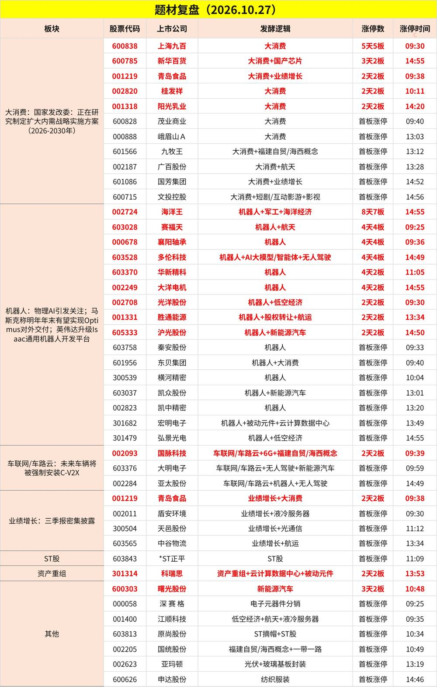
机器人、物理AI： 上海：研制推广物理AI装备，研制具备自主感知和决策能力的机器人等智能制造装备
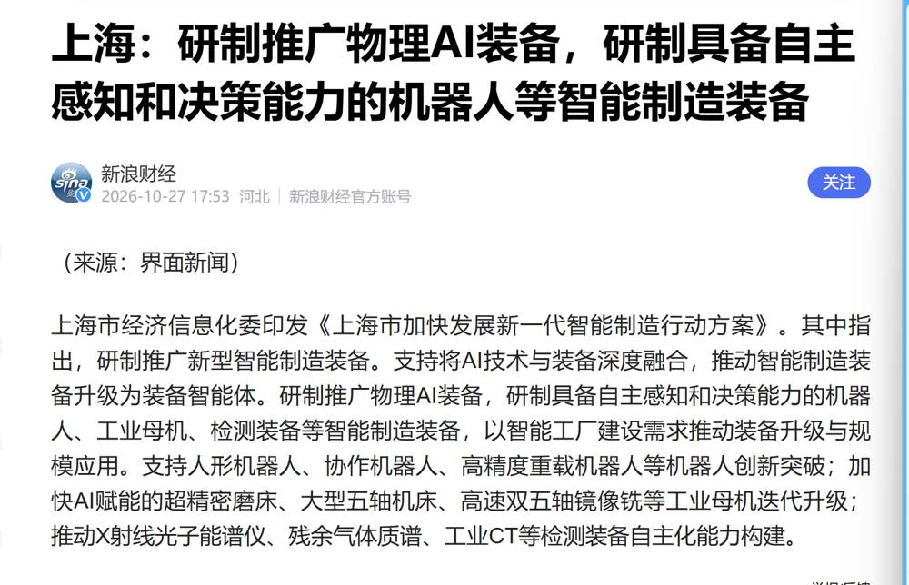
Anthropic在招股书中有关于物理AI的相关表述
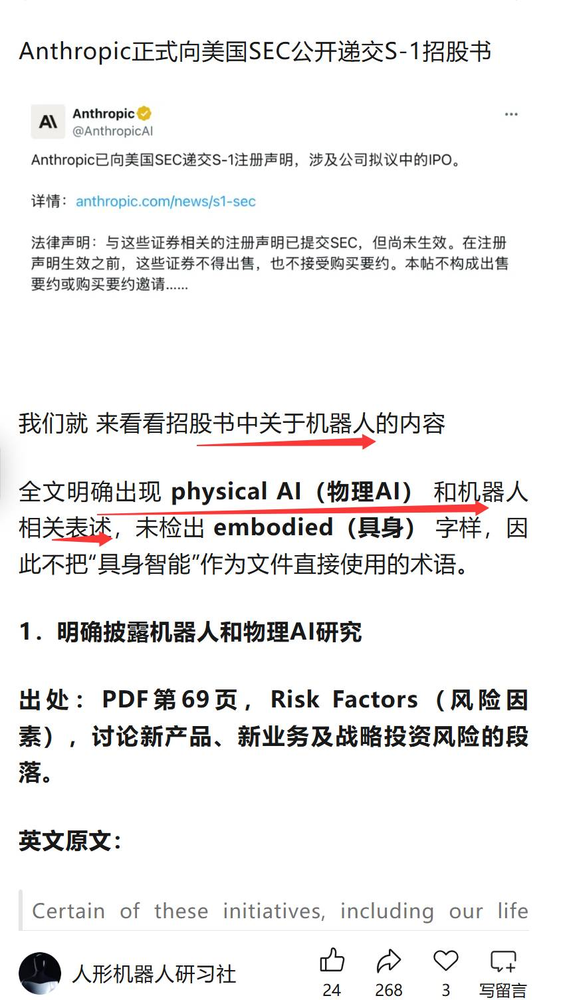
特斯拉美股昨天大涨五个多点 今晚继续涨 目前是三个点
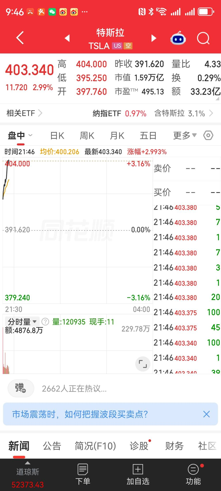
今晚T链有代表公司三季报出业绩了 机构依然看好物理ai和机器人是11月主线
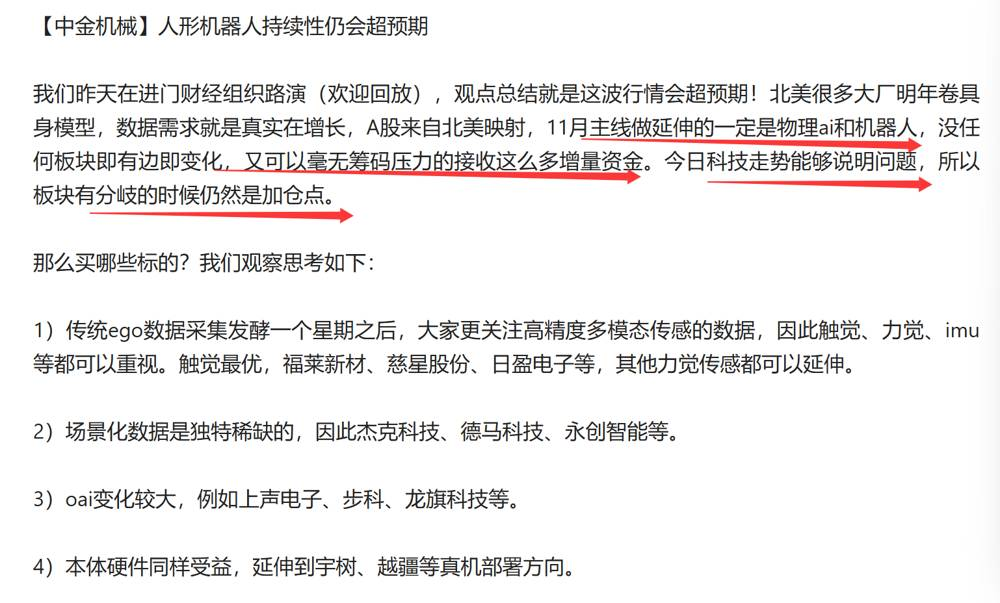
传媒、短剧： 抖音集团副总裁李亮：腾讯短剧、短视频增长速度远远超过抖音和红果
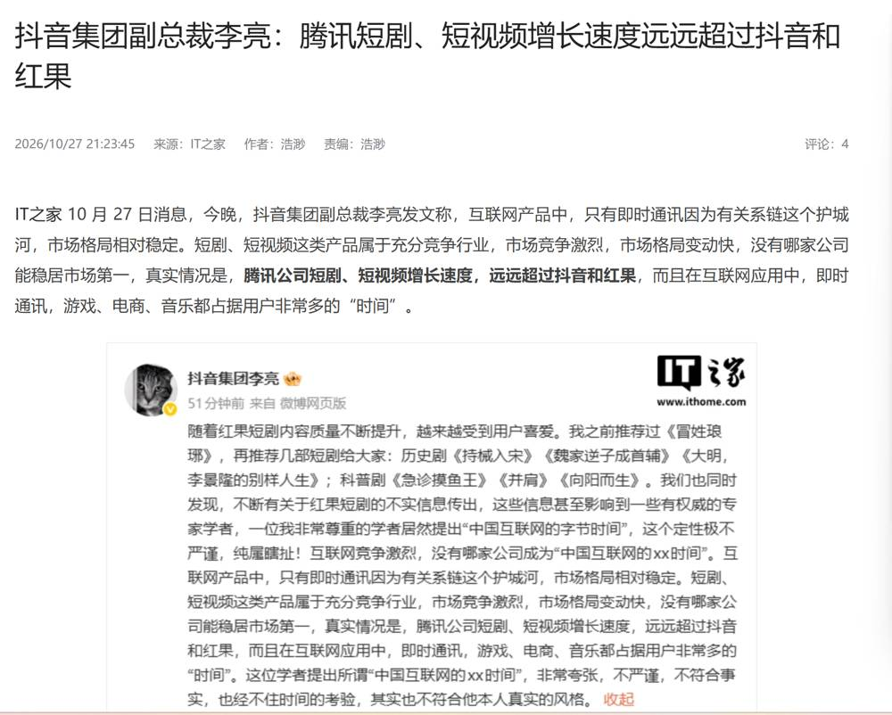
雄安新区携手腾讯共建AIGC漫剧产业基地
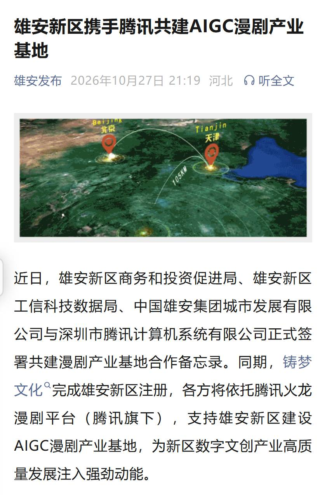
Instagram正式进军微短剧，在美国、印度上线Series内测
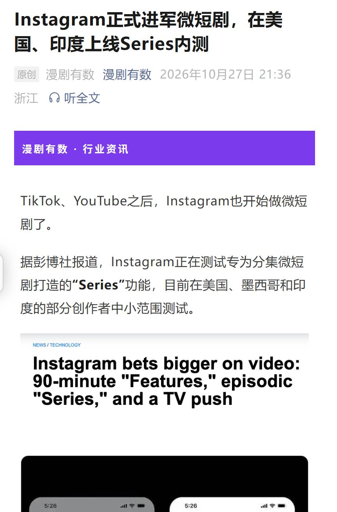
俄乌重建： 乌克兰：俄乌在阿列什基停火将持续至11月1日22时59分，这是2022年以来最大规模的一次局势降级
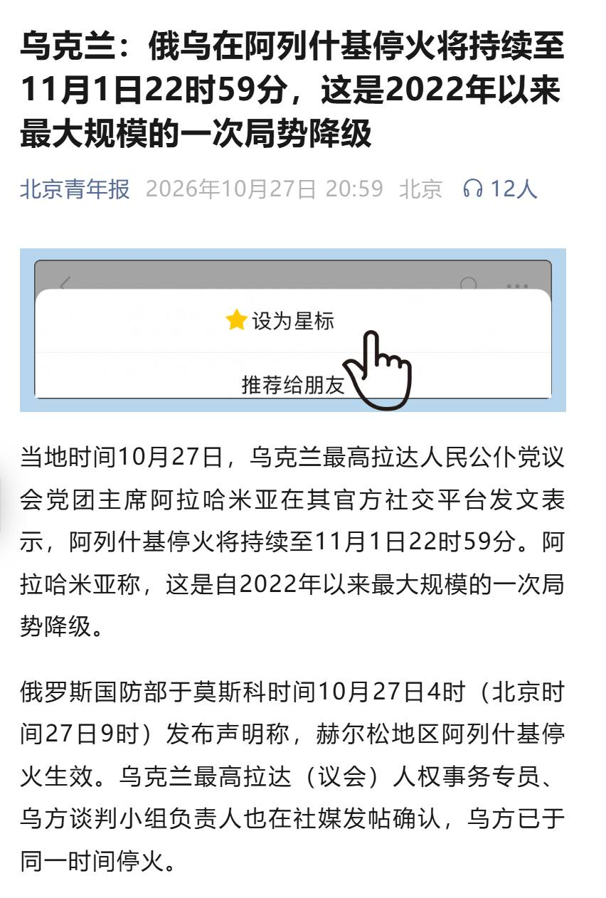
伊朗最高领袖会见最高安全官员，强调落实伊方需求以期结束战争
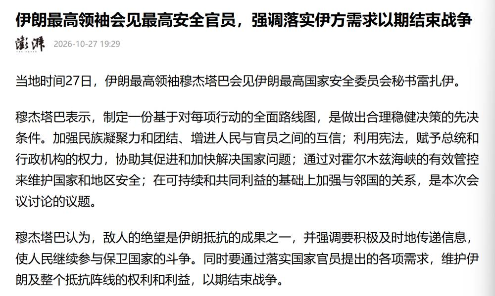
消费： 限领3张，江苏向0至3岁婴幼儿家庭发放消费券
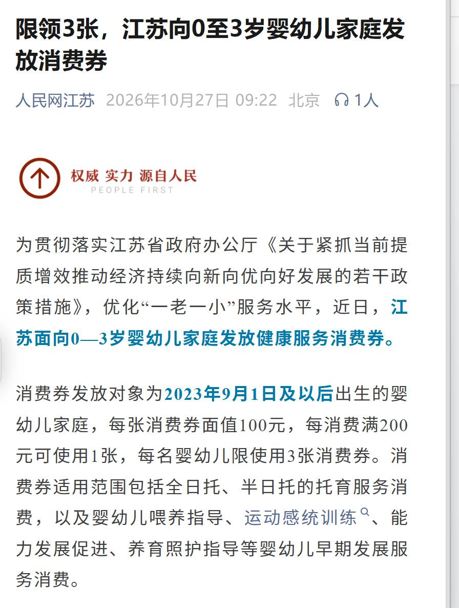
存储： 马斯克坚定看好内存需求 称机器人所需内存将超过其他任何领域
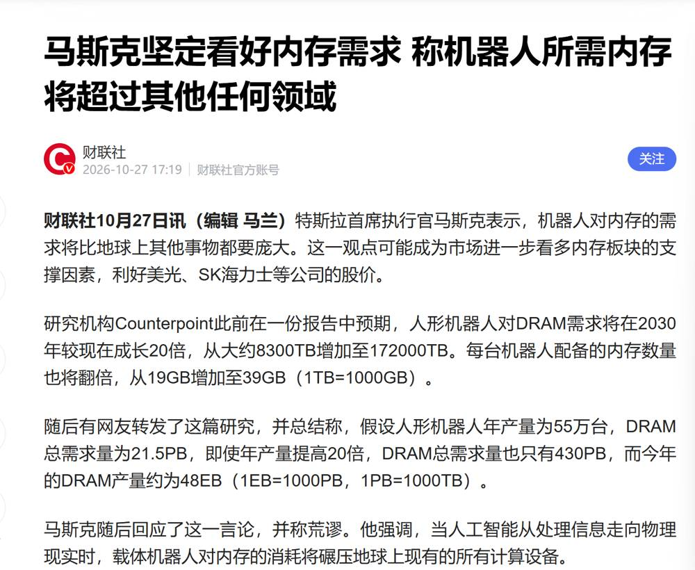
天然气： 欧洲天然气价格，逼近100欧元
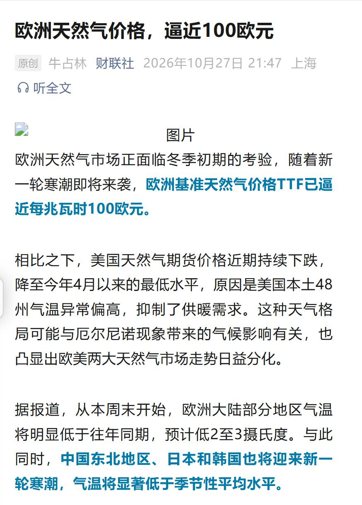
冰雪经济： 多地雪场开启新雪季 冰雪旅游消费前置升温态势显著
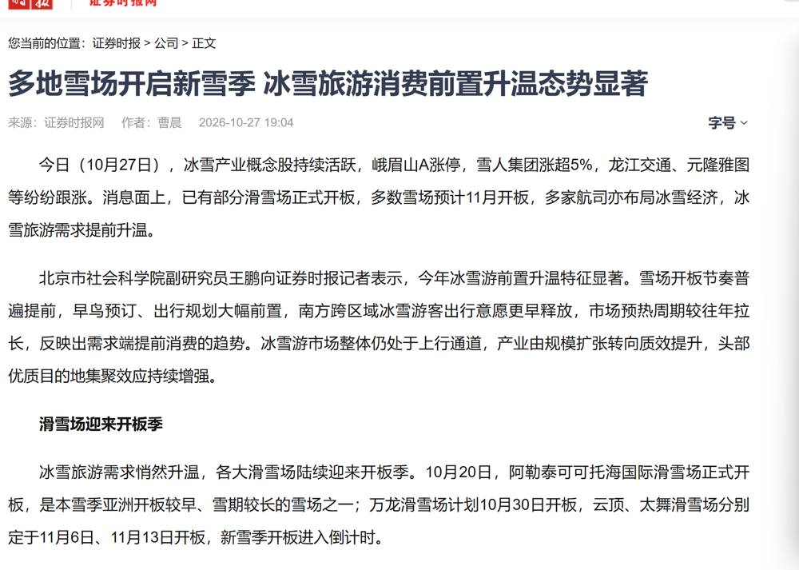